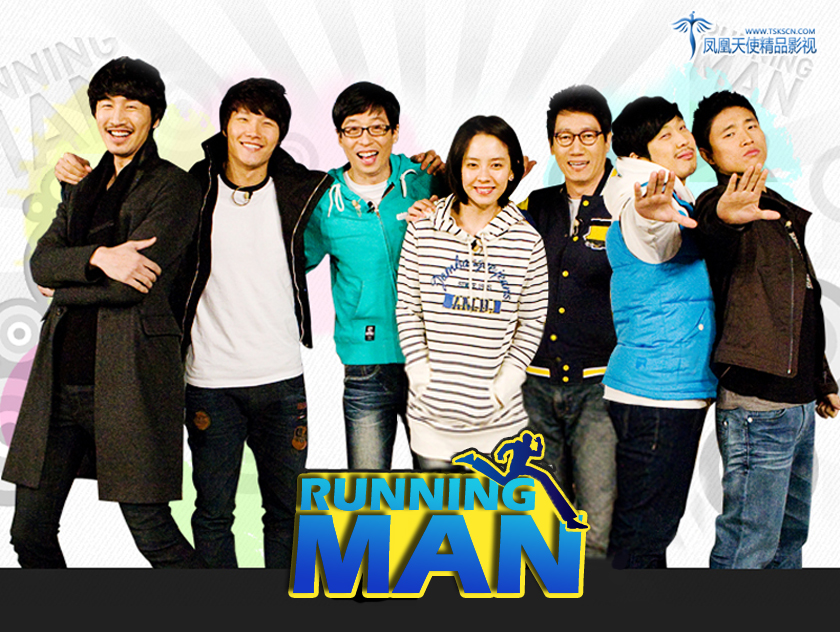

Running Man
风靡世界的韩国户外真人秀

从左到右人员名称为：李光洙，金钟国，刘在石，宋智孝，池石镇，河东勋，姜熙建
以下为Running Man现任成员简介
-
李光洙，生于1985年7月14日，演员、模特、MC。
代表作品：《城市猎人》、《没关系，是爱情啊》、《突然变异》、《心里的声音》等。 -
金钟国，生于1976年4月25日，歌手、MC，TURBO组合主唱.2005年获得韩国三大电视台歌谣大赏“三冠王”
音乐作品：《一个男人》、《讨人喜欢》、《男人都那样》、《原地踏步》、《回想》、《黑猫》等。
综艺作品：《X-Man》、《家族诞生》、《危机逃出NO.1》等。 -
刘在石，生于1972年8月14日，韩国国民MC，和姜虎东被称为韩国艺能界“两大山脉”。
综艺作品：《X-MAN》、《家族诞生》、《无限挑战》等。 -
宋智孝，生于1981年8月15日，本名千成林，演员、MC。
影视作品：《宫》、《胡狼来了》、《天命》、《霜花店》等。 -
池石镇，生于1966年2月10日，知名MC、搞笑艺人。
综艺作品：《明星金钟》、《女杰》、《Hi Five》等。 -
河东勋，生于1979年8月20日，歌手、演员、MC，原Zikiri组合成员。
综艺作品：《无限挑战》、《哈哈梦show》等。 -
姜熙建，生于1978年2月24日，歌手、MC，leessang组合成员。
音乐作品：《不能分手的女人，不能离开的男人》、《关掉TV》、《人情味》等。
"现在的RM跟以前比是没之前好看，但是依旧喜欢，每天都会看，昨晚看到今天凌晨6点半，然后早上9点还要上班，有时候在直播平台看，有时候在视频网站上看，不管是看了多少遍，感觉永远不会腻，看到精彩的地方，哪怕是知道结局，都会忍不住大笑、揪心，最喜欢的还是钟国欧巴，老是希望他赢，看他被针对也会心疼，这个节目陪伴了我三年，三年来没有停过，每天不看就会感觉少点什么，哪怕只看几分钟也会看看，真的不敢想像没有rm、没有七只该怎么办，已经成为生活的一部分，真的很爱很爱，希望永远下去！"
——来自百度贴吧
如果大家对Running Man感兴趣的话，可以点击链接Running Man高清视频，观看视频，爆笑登场。